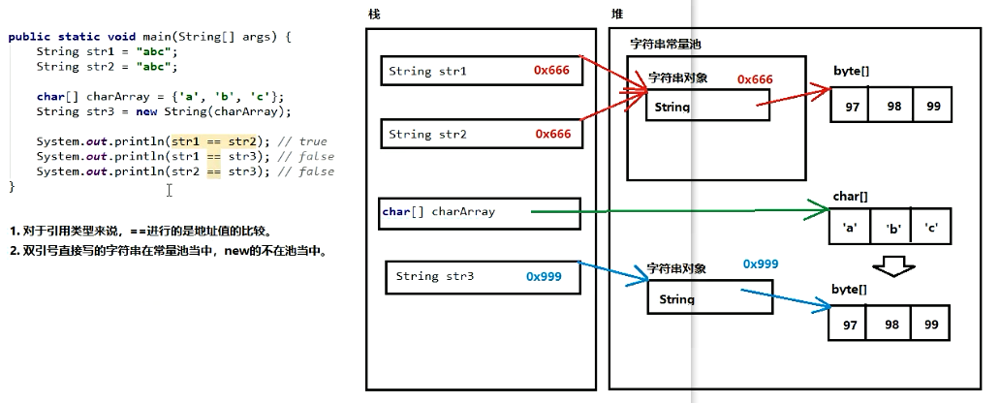

2019-10-21-23:30:24
ArrayList类[集合]
What:java.util.ArrayList是大小可变的数组的实现，存储在内的数据称为元元素,此类提供一些方法来操作内部存储的元素
Why:ArrayList大小可变,所以AttayList中可不断添加元素,其大小也自动增长。
1.数组的长度不可以发生改变,但是ArrayList集合的长度是可以发生改变的
How:ArrayList<E> 对象名 = new ArrayList<E>();
<E>叫做泛型,表示一种指定的数据类型,可以使用一种引用数据(不能是基本类型来替换)类型将其替换,右侧的E可以省略不写
注意事项:
1.ArrayList集合来说,直接打印得到的是内容,不是地址值,而数组打印得到的是地址值
2.如果内容为空,打印得到的是中括号,[]
常用方法
1.public boolean add(E e); 向集合当中添加元素，参数的类型和泛型一致。返回值代表添加是否成功。
备注:对于Arraylist集合来说，add添加动作一定是成功的，所以返回值可用可不用。但是对于其他集合(今后学习)来说，add添加动作不一定成功.
2.public E remove(int index): 从集合当中册除元素，参数是索引编号，返回值就是被删除掉的元素
3.public E get(int index), 从集合当中获取元素，参数是索引编号，返回值就是对应位置的元素。
4.public int size():获取集合的尺寸长度，返回值是集合中包含的元素个数。
package demoarraylist;
import java.util.ArrayList;
public class ArrayListPra01 {
public static void main(String[] args) {
//创建一个ArrayList集合对象
ArrayList<String> arrayList = new ArrayList<>();
//先打印空集合
System.out.println(arrayList);//[]
//向集合中添加元素
Boolean success = arrayList.add("盖伦");
System.out.println(arrayList);//[盖伦]
System.out.println("添加的动作是否成功:"+success);//添加的动作是否成功:true
arrayList.add("皇子");
arrayList.add("德邦");
arrayList.add("剑圣");
System.out.println(arrayList);//打印添加的元素
//从集合中获取元素
System.out.println(arrayList.get(0));//盖伦
System.out.println(arrayList.get(1));//皇子
System.out.println(arrayList.get(2));//德邦
System.out.println(arrayList.get(3));//剑圣
//删除集合中的元素
String name = arrayList.remove(3);
System.out.println("被删除的是:"+name);//被删除的是:剑圣
System.out.println(arrayList);//[盖伦, 皇子, 德邦]
//获取集合的长度,也叫元素个数
int size = arrayList.size();
System.out.println("集合的长度是:"+size);//集合的长度是:3
}
}
字符串:
What:java.lang.String类代表字符串.程序中所有的双引号字符串,都是String类的对象
字符串的特点:
1.字符串的内容永不可变。[重点]
2.正是因为字符串不可改变，所以字符串是可以共享使用的。
3.字符串效果上相当于是char[ ]字符数组，但是底层原理是byte[ ]字节数组。
创建字符串的常见3+1种方式。
三种构造方法:
public String(): 创建一个空白字符串，不含有任何内容。
public String(char[] array): 根据字符数组的内容，来创建对应的字符串。
public String(byte[] array): 根据字节数组的内容，来创建对应的字符串。
一种直接创建:String str ="Hello"; //右边直接用双引号
注意:直接写上双引号，就是字符串对象。
package demostring;
public class StringPra01 {
public static void main(String[] args) {
//使用空参构造
String str1 = new String(); //小括号留空，说明字符串什么内容都没有。
System. out . println("第1个字符串:"+ str1);
//根据字符数组创建字符串
char[] charArray = { 'A', 'B','C' };
String str2 = new String( charArray);
System. out . println("第2个字符串:"+ str2);//第2个字符串:ABC
//根据字节数组创建字符串
byte[] byteArray = { 97, 98,99 };
String str3 = new String(byteArray);
System.out.println("第3个字符串:"+ str3);//第3个字符串:abc
//直接创建
String str4 = "Hello";
System.out.println("第四个字符串:"+str4);//第四个字符串:Hello
}
}
字符串常量池:

字符串的比较方法:
==是进行对象的地址值比较,如果确实需要字符串的内容比较，可以使用两个方法
两个方法:
public booleon equols(object obj),参数可以是任何对象，只有参数是一个字符串并且内容相同的才会给true,否则返回false.
public boolean equalsIgnoreCase(String str), 忽略大小写，进行内容比较。
注意事项,
1.任何对象都能用0bject进行接收。
2. equals方法具有对称性，也就是a. equals(b)和b. equals(a)效果一样。
3.如果比较双方一个常量一个变量，推荐把常量字符串写在前面。
推荐: "abc".equats(str) ,不推荐str.equals( "abc ")
字符串的获取方法
String当中与获取相关的常用方法有:
public int length(),获取字符串当中含有的字符个数，拿到字符串长度。
public String concat(String str): 将当前字符串和参数字符串拼接成为返回值新的字符串。
public char charAt(int index), 获取指定索引位置的单个字符。(素引从0开始)
public int indexof(String str): 查找参数字符串在本字符串当中首次出现的索引位置，如果没有返回-1值。
字符串的截取方法:
public string substring(int index); 截取从参数位置一直到字符串末尾，返回新字符串。
public String substring(int begin, int end); 截取从begin开始，一直到end结束，中间的字符串。
备注。[begin,end), 包含左边，不包含右边。
字符串的转换:
public char[] toCharArray(); 将当前字符串拆分成为字符数组作为返回值。
public byte[] getBytes():获得当前字符串底层的字节数组。
public String replace(CharSequence oldString, CharSequence newString);
将所有出现的老字符串替换成为新的字符串，返回替换之后的结果新字符串。
备注: CharSequence意思就是 说可以接受字符串类型。
字符串的分隔:
public String[] split(String regex): 按照参数的规则，将字符串切分成为若干部分。
注意事项:
split方法的参数其实是一个 “正则表达式”，今后学习。
今天要注意:如果按照英文句点“。进行切分。必须写"\\." (两个反斜杠)
有点晚了,后面的代码明天再补回去